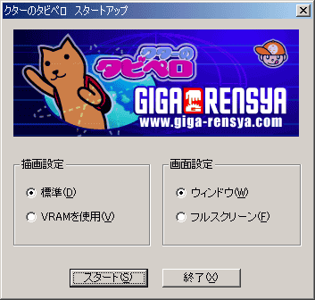
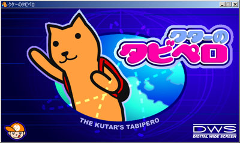
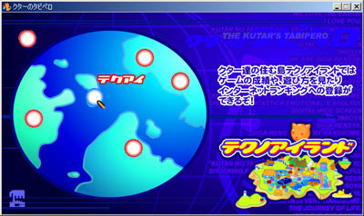
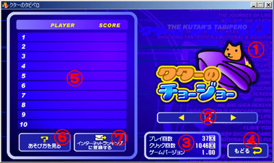
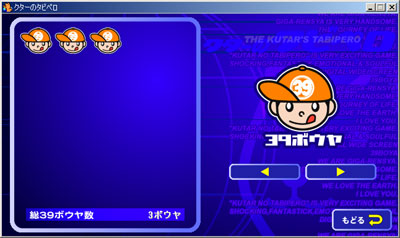

テクノアイランドを飛び出し、クターと一緒に旅に出よう！
行く先々でゲームに挑戦だ！
ゲームはどんどん追加されるぞ！そ～れ、レッツ トライ！！
|
|
|
ダウンロードしたファイルをダブルクリックして、保存場所を指定後、解凍を行なってください。
解凍されたフォルダの中からTabipero.exeをダブルクリックすると「クターのタビペロ」が起動します。
「クターのタビペロ」を起動すると、スタートアップ画面が現れます。
まず、[ 描画設定 ]で[ 標準（D）]か[ ＶＲＡＭを使用（V）]のどちらかを選択してください。
通常は[ 標準（D）]でスタートしてください。
お使いのパソコンによっては[ ＶＲＡＭを使用（V）]を選択した方が、表示性能が上がる場合もあります。
次に、[ 画面設定 ]で[ ウィンドウ（W）]か[ フルスクリーン（F）]のどちらかを選択してください。
[ ウィンドウ（W）]でスタートすると、ウィンドウ表示で「クターのタビペロ」がプレイでき、[ フルスクリーン（F）]でスタートすると、フルスクリーン表示でプレイすることができます。
お好みの表示方法を選んでスタートしてください。
～フルスクリーン表示の注意事項～
- フルスクリーン表示の時に「クターのタビペロ」を終了する場合、キーボードの[ＥＳＣ]キー、もしくは[Ａｌｔ]キー＋[Ｆ４]キーを押して終了してください。
- ランキング送信操作、ＵＲＬリンク操作でブラウザが起動する際、画面はバックグラウンドで動作していますので、「クターのタビペロ」のゲーム画面に戻るには、タスクバー上の”クターのタビペロ”を選択してください。
すべての設定が完了したら、[ スタート（S）]をクリックしてください。
「クターのタビペロ」がスタートします。
「クターのタビペロ」をそのまま終了する場合は、[ 終了（X）]をクリックしてください。

スタートボタンを押すと”JTB”と”ギガ連射”の紹介の後、タイトル画面が現れます。
画面をクリックするとメニュー画面に入ります。

メニュー画面で赤く光る部分にマウスカーソルを重ねると「タビサキ」が表示されます。
そこをクリックするとゲーム開始です。
青く光る部分をクリックすると各ゲームの記録や遊び方、またはインターネットランキングへの登録画面になります。


①ゲームのタイトルです。
②表示するゲームを切り替えます。
③現在表示されているゲームの情報です。
④メニュー画面に戻ります。
⑤現在表示されているゲームのハイスコアです。
⑥現在表示されているゲームの遊び方を見ることができます。
⑦あなたの記録をインターネットランキングで登録します。
インターネットランキングとは？
各種ゲームの記録を競う公開ランキングです。
あなたも記録を送信することにより、ランキングに参加することができます。
ただし、１人１つの記録しか送信することはできません。
また記録を送信しても、すでにあなた以上の記録が多数登録されている場合は、必ずしもランキング入りできるとは限りません。
～インターネットランキングの注意事項～
- 記録を送信するためにはインターネットに接続されている必要があります。
- 一つ以上のハイスコアが記録されていないと送信はできません。
- 送信される記録は１位の記録だけです。
ゲーム中に「３９ボウヤ」が現れるときがあります。
「３９ボウヤ」を取るとテクノアイランドで取った数の記録を見る事ができます。
３９ボウヤを集めると、獲得した３９ボウヤ数に応じて３９ショップでプレゼントをもらうことができます。
がんばってたくさん集めましょう。

|
|
|
|
OS |
日本語版Windows98/Me/2000/XP |
CPU |
PentiumII300MHz以上以上
(PentiumIII500MHz以上推奨) |
メモリ |
128MB以上(256MB以上推奨) |
ディスプレイ |
640×480ドット
16ビットカラー以上表示可能なグラフィックボード
(16MB以上のVRAM推奨） |
サウンド |
必須 |
マウス |
必須 |
その他 |
DirectX7以上のランタイム環境
DirectXの最新版は以下のページにて
ダウンロードできます。
http://www.microsoft.com/japan/directx/ |
|
アンインストールについて
解凍したファイルを削除してください
|
|
|
|
|